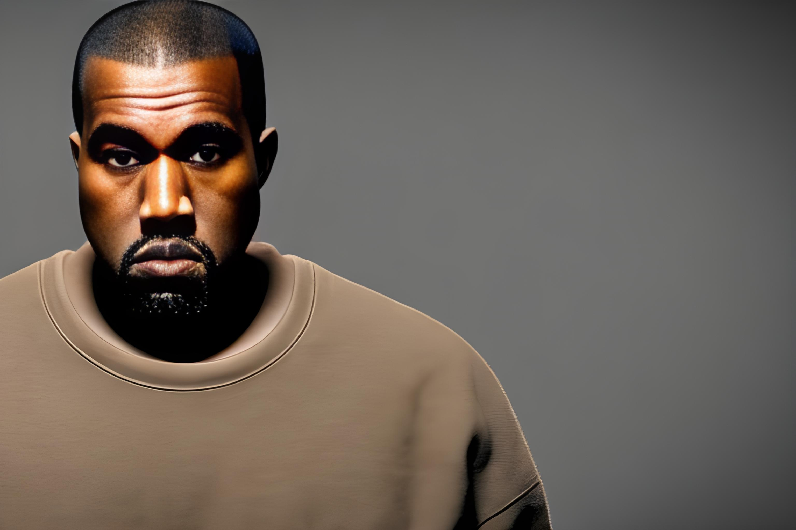

Kanye West is a flash-mob-like media glare, and only a monster would want him banned
September 10, 2016 - Patrick Wintour, Sam Westrop, Telegraph View, Asa Bennett, Dia Chakravarty, Asa Bennett Was A Senior Tax, Regulatory Reform Officer In Brussels, Is A Contributing Editor To The Spectator.

Why, then, have we come to accept any of this about someone as baffling as Kanye West? Kanye West is very much a strange animal indeed, one that should have bedevilled people from the moment he entered the scene. Kanye’s current, heroically dignified excursion is the raising of $53m for the relief of Syrian refugees, but if he were a contemporary contemporary artist, the work might receive barely a ripple. But West is a superstar, and a flash-mob-like media glare has been seeking his every move. It now seems doubtful that even his desperately well-meant generosity will be reciprocated.
Still, if there is one man who owes little or nothing to art (apart from his own self-belief, if that’s a criteria) in bringing so much attention to the cause of world peace, it is Kanye. Everything about Kanye, from his haircut to his Twitter ego, springs forth from the source of his own loathing. What unites Kanye with, say, the unremarkable Jose González, is the audacity to want to convey something important to an audience of primarily adolescent ennui – the generation that came after the 80s, and before the 90s. It is as if Kanye were not merely offering us an extreme version of typical humanity, but an attempt to draw in rather than exalt, and to suggest, like Brecht and his self-styled emulators, that difference is good.
But the anger (often genuinely held, but also stoked by money and support from people with little or no connection to the Syrian crisis) has attracted everyone from Sean Hannity to Jason Isaacs, who wanted West to go to prison for his outburst against Taylor Swift. What do those asking for Kanye’s ban on the internet have against a man who is so, you know, emotive that he can’t, after a while, be bothered to tell you how he feels?
The reason so many people seem to want to find an exception to Kanye’s appeal is because he does not really sell what he does. Like few other artists, it seems only because of West’s limitations that so many are drawn to his music. The opposite is true: music is not art, but the price paid for trying to fool others about your true capacity, and being taken seriously. If, as it should be, West wants to be taken seriously, if he wants to do what he says he wants to do, if he wants to make his music the focal point of his characters, and if he wants to be his own boss, then that is exactly what he will have to sacrifice for people to take him seriously.